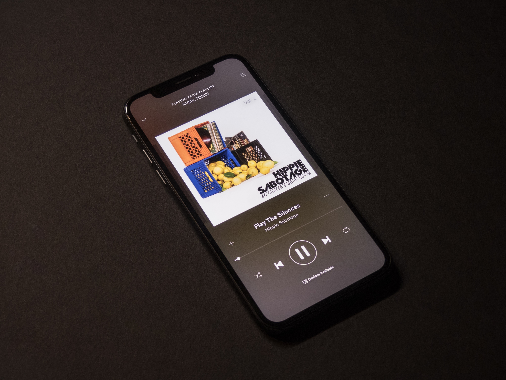

Video Mengenai Revolusi Industri 4.0
Perkembangan Teknologi
Perkembangan teknologi membawa dampak begitu pesat bagi kehidupan manusia modern , diantaranya :

Pekerjaan menjadi lebih terstruktur dan sesuai jadwal.
Dengan adanya internet , terdapat perkembangan signifikan pada aspek penjadwalan serta waktu. Perusahaan-perusahaan besar dengan mudahnya menjadwalkan produknya rilis serta institusi pendidikan dapat menginfokan segala hal penting mengenai institusi tersebut. Keuntungan yang didapatkan ialah :
- Segala pekerjaan dapat dikerjakan dengan tepat waktu dan selesai tepat waktu sesuai jadwal.
- Efisiensi informasi serta kemudahan bagi setiap orang untuk mengakses informasi.

Efisiensi ekonomi dan perbankan berkat FinTech
Financial technology/FinTech merupakan hasil gabungan antara jasa keuangan dengan teknologi yang akhirnya mengubah model bisnis dari konvensional menjadi moderat, yang awalnya dalam membayar harus bertatap-muka dan membawa sejumlah uang kas, kini dapat melakukan transaksi jarak jauh dengan melakukan pembayaran yang dapat dilakukan dalam hitungan detik saja.
FinTech muncul seiring perubahan gaya hidup masyarakat yang saat ini didominasi oleh pengguna teknologi informasi tuntutan hidup yang serba cepat. Dengan FinTech, permasalahan dalam transaksi jual-beli dan pembayaran seperti tidak sempat mencari barang ke tempat perbelanjaan, ke bank/ATM untuk mentransfer dana, keengganan mengunjungi suatu tempat karena pelayanan yang kurang menyenangkan dapat diminimalkan. Dengan kata lain, FinTech membantu transaksi jual beli dan sistem pembayaran menjadi lebih efisien dan ekonomis namun tetap efektif.

Belajar jadi lebih menyenangkan
Manfaat penggunaan teknologi adalah sebagai sarana pendukung bagi siswa dan pendidik untuk mencari informasi yang lebih luas, selain menggunakan sumber dari buku dan media cetak. ... Penggunaan teknologi dalam pendidikan dapat membuat peserta didik lebih nyaman dan tidak terkesan jenuh atau monoton. Apalagi di masa pandemi COVID-19 saat ini, teknologi sangatlah berperan penting untuk belajar secara daring. Keuntungan :
- Luasnya materi belajar secara online baik tulisan maupun bentuk video.
- Mempermudah belajar dari rumah di masa pandemi COVID-19.
- Dapat mempelajari hampir segala ilmu pengetahuan secara online baik yang gratis maupun yang berbayar.

Terwujudnya WFH (Work From Home) di tengah pandemi
Di tengah pandemi yang sedang mengganas , pekerjaan dapat dilakukan bahkan dari rumah, dengan adanya teknologi , bekerja dari rumah merupakan alternatif agar pekerjaan tetap terlaksana dan masyarakat tidak kehilangan pekerjaan.
Gadget
Gadget atau gawai adalah suatu peranti atau instrumen yang memiliki tujuan dan fungsi praktis yang secara spesifik dirancang lebih canggih dibandingkan dengan teknologi yang diciptakan sebelumnya. Perbedaan gawai dengan teknologi yang lainnya adalah unsur kebaruan berukuran lebih kecil.
Fungsi gawai
Fungsi dari gawai sangatlah beragam , berikut fungsi dari gawai
- Mempermudah pekerjaan karena ukuran gawai relatif kecil
- Mempermudah akses informasi dikarenakan ukuran gadget yang kecil dan mudah dibawa kemana-mana
- Termasuk gaya hidup modern
- Sebagai hiburan dikala senggang waktu
- Sebagai media komunikasi yang mudah dibawa dan digunakan kapanpun
Berikut merupakan contoh gawai yang tren di masa kini

Smartphone (Ponsel Pintar)
Ponsel pintar merupakan gawai yang sangat tren di saat ini dan juga merupakan teknologi yang paling pesat perkembangannya, setiap tahun para vendor Ponsel pintar berlomba-lomba memperkenalkan ponsel unggulan mereka yang disebut juga dengan flagship.
Smartphone memiliki beberapa kelebihan sehingga penggunanya sangatlah ramai saat ini, hampir semua orang dari segala usia mempunyai smartphone, berikut beberapa hal yang dapat dilakukan dengan smartphone :
Fotografi dan Videografi

Smartphone saat ini memiliki kamera yang sangat mumpuni untuk melakukan fotografi baik awam maupun profesional. Contoh vendor smartphone yang terkenal memiliki kualitas kamera bagus ialah Apple iPhone , Samsung Galaxy , Sony Xperia dll.
Bermain game atau menonton film
Saat ini smartphone memiliki processor dan GPU yang mumpuni untuk menjalankan gim-gim 3D yang memiliki grafis memukau.Bukan hanya itu, hampir setiap smartphone flagship bahkan mid-end class dapat merekam dan menonton video dengan resolusi 4K yang memanjakan mata.
Berkomunikasi chatting ataupun video call dimana saja
Berkomunikasi menggunakan aplikasi chatting terkenal seperti WhatsApp , Telegram ,Facebook Messenger dan lain-lain merupakan keuntungan dari menggunakan smartphone , karena dapat dilakukan hampir dimana saja , dan tidak dipungut biaya untuk menggunakannya. Sedangkan untuk bertelepon video dengan langsung bertatap muka sangatlah mudah untuk dilakukan dengan berbagai aplikasi chatting dibantu dengan sudah mumpuni nya kamera yang tersedia pada smartphone sehingga melakukan video call dengan jernih merupakan hal yang umum dilakukan.
Laptop dan Notebook
Laptop atau Notebook adalah sebuah komputer yang didesain seminimal mungkin agar mudah untuk dibawa kemana-mana. Keuntungan dari menggunakan laptop ialah mobilitas. Laptop saat ini sangatlah ringkas dan ringan untuk dibawa kemana-mana sehingga setiap orang dapat mengakses pekerjaan yang memerlukan laptop dimana saja. Contohnya ialah untuk presentasi kerja , atau mengerjakan tugas sekolah di kafe.
Laptop merupakan salah satu teknologi yang pesat perkembangannya dan saat ini laptop memiliki kinerja dan kecepatan yang sudah hampir setara dengan komputer desktop dengan ukuran yang tetaplah kecil. Contoh komputer terkecil ialah Raspberry Pi
Contoh vendor laptop yang terkenal ialah : Asus , Apple Macbook , Lenovo , HP , Sony VAIO dll.
Raspberry Pi

Raspberry Pi, sering disingkat dengan nama Raspi, adalah komputer papan tunggal yang seukuran dengan kartu kredit yang dapat digunakan untuk menjalankan program perkantoran, permainan komputer, dan sebagai pemutar media hingga video beresolusi tinggi

Kamera digital
Kamera digital adalah sebuah perangkat elektronik yang digunakan untuk memvisualisasikan keaadan sekitar menggunakan sebuah sensor dalam bentuk format digital dan disimpan dalam media penyimpanan digital (memori).kamera merupakan alat untuk membuat gambar dari objek untuk selanjutnya dibiaskan melalui lensa pada sensor yang hasilnya kemudian direkam dalam format digital ke dalam media simpan digital. Kemudahan dari kamera digital adalah hasil gambar yang dengan cepat diketahui hasilnya secara instan dan kemudahan memindahkan hasil (transfer). Beberapa kamera digital, terutama DSLR dan high-end cameras dilengkapi fasilitas RAW yang dapat ditindaklanjuti di komputer mengunakan perangkat lunak tertentu untuk hasil terbaik, tetapi pada saat ini fasilitas Auto Mode telah menghasilkan gambar yang baik dalam format JPEG.
Kamera DSLR
Digital Single Lens Reflex (Digital SLR atau DSLR) adalah kamera digital yang menggunakan sistem cermin otomatis dan pentaprisma atau pentamirror untuk meneruskan cahaya dari lensa menuju ke viewfinder. Kamera SLR menggunakan Pentaprism atau yang biasa disebut cermin segi lima yang letaknya di atas jalur optis melalui lensa dan akan disalurkan ke lempengan film untuk kamera analog atau sensor pada DSLR. Setelah itu cahaya yang masuk akan dipantulkan ke bagian atas melalui cermin pantul dan setelah itu baru mengenai pentaprism. Pentaprism akan memantulkan cahaya beberapa kali hingga menyentuk viewinder (pembidik). Saat shuter dilepaskan, kaca akan membuka jalan bagi cahaya supaya bisa masuk langsung mengenai Negative film untuk Analog SLR atau lempengan sensor digital untuk DSLR
Kamera Mirrorless

Kamera Mirrorless adalah kamera yang pada dasarnya sama seperti kamera DSLR tapi tidak memakai cermin/pentaprisma. Mirrorless mempunyai banyak nama lain seperti Mirrorless Interchangeable-Lens Camera (MILC), Compact System Camera (CSC), Mirrorless System Camera (MSC), Digital Single Lens Mirrorless (DSLM).Ciri dari Mirrorless adalah ukurannya yang relatif kecil, beratnya yang ringan, lensa yang dapat diganti-ganti, hasil bidikan yang dihasilkan juga tidak jauh beda dengan DSLR, karena beberapa mirrorless ada yang sudah full format. Cara Kerja Kamera Mirrorless dengan cara cahaya yang masuk langsung diterima sensor tanpa dipantulkan cermin dan ditampilkan di viewfinder electronic.
Earphone / Headset
Earphone dan headset merupakan sebuah gawai untuk memutar lagu menggunakan perangkat ponsel pintar ataupun laptop. Perbedaan earphone dengan headset adalah dari ukurannya. Earphone cenderung lebih kecil ukurannya dan lebih sering digunakan untuk perangkat ponsel pintar ataupun laptop. Sedangkan headset memiliki ukuran yang lebih besar serta memiliki speaker yang lebih besar serta kualitas suara yang bagus, biasa digunakan untuk komputer maupun laptop.
Aplikasi streaming musik online
Dengan banyak munculnya aplikasi streaming musik online , earphone merupakan gawai yang sangat vital saat ini, dengan menggunakan layanan streaming musik gratis serta earphone yang mudah dibawa menjadikan mudahnya mendengarkan musik dimanapun dan kapanpun.

Tablet
Sabak elektronik atau komputer tablet (bahasa Inggris: tablet computer), atau ringkasnya tablet, adalah suatu komputer portabel lengkap yang seluruhnya berupa layar sentuh datar. Ciri pembeda utamanya adalah penggunaan layar sebagai peranti masukan dengan menggunakan stilus, pena digital, atau ujung jari, alih-alih menggunakan papan ketik atau tetikus. Microsoft memperkenalkan versi Windows XP untuk komputer tablet yang disebutnya Tablet PC pada tahun 2000, sedangkan Apple baru meluncurkan versi komputer tabletnya pada tahun 2010 dengan nama iPad. Pada tahun 2011 Samsung meluncurkan versi komputer tablet Galaxy Tab 7 (yang kemudian dilanjutkan dengan peluncuran Samsung Galaxy Tab 7.0 Plus) dan 10.1(P7100)
Konsol Permainan
Konsol permainan adalah sebuah mesin elektronik yang dirancang khusus untuk memainkan permainan video. Perangkat penampil grafiknya dapat berupa monitor komputer atau televisi, alat pengendalinya disebut joystick atau controller. Konsol permainan pertama kali dibuat Atari, kemudian dilanjutkan dengan Nintendo yang sempat merajai pasaran pada tahun 1985-1989. Konsol permainan modern saat ini antara lain adalah PlayStation buatan Sony dan Xbox buatan Microsoft. Konsol yang berdimensi kecil dan mudah dibawa ke mana-mana disebut konsol portabel, misalnya PlayStation Portable yang dirilis oleh Sony pada tahun 2005, dan Nintendo DS yang diproduksi oleh Nintendo.
Berikut contoh konsol permainan
PlayStation

PlayStation adalah konsol permainan grafis dari era 32-bit. Pertama kali diproduksi oleh Sony sekitar tahun 1990. PlayStation diluncurkan perdana di Jepang pada 3 Desember 1994, di Amerika Serikat 9 September 1995 dan Eropa 29 September 1995. PlayStation menjadi sangat terkenal sehingga membentuk "Generasi PlayStation". Dari sekian banyak game PlayStation, beberapa yang terkenal adalah: Suikoden, Tomb Raider, Final Fantasy, Resident Evil, Grand Theft Auto, Tekken, Winning Eleven, Ridge Racer, wipEout, Gran Turismo, Crash Bandicoot, Spyro, dan seri Metal Gear Solid. Pada 18 Mei 2004, Sony telah memproduksi 100 juta PlayStation dan PSOne ke seluruh dunia. Pada Maret 2004, sebanyak 7.300 judul permainan telah tersedia dengan jumlah akumulasi 949 juta.
Microsoft Xbox
Xbox adalah sebuah merek permainan video yang dibuat dan dimiliki oleh Microsoft. Ini mewakili serangkaian konsol permainan video hasil kembangan Microsoft, dengan tiga konsol masing-masing dirilis dalam generasi keenam, ketujuh dan kedelapan.
Nintendo Switch
Nintendo Switch adalah konsol video game yang dirilis perusahaan Nintendo pada 3 Maret 2017. Konsol ini juga dikenal dengan codename NX pada pengembangannya.
Smartwatch (Jam tangan pintar) / Ponsel jam tangan
Jam tangan ponsel atau watchphone adalah telepon genggam yang dikemas dalam bentuk jam tangan. Ukurannya lebih besar daripada jam tangan pada umumnya dan kurang lebih sama dengan jam tangan sport. Penemuan teknologi jam tangan ponsel bertujuan untuk mengimprovisasi kegunaan ponsel berdasarkan fungsi jam tangan yang sangat praktis penggunaannya yaitu fungsi pembawaan. Tidak seperti ponsel-ponsel pada umumnya, jam tangan ponsel yang digunakan dengan cara memasangnya di pergelangan tangan akan membuat penggunanya tidak perlu repot-repot membuka tas atau merogoh ke kantong saat ada panggilan. Karena jam tangan ponsel selalu dalam keadaan terpasang di pergelangan tangan, para pengguna jam tangan ponsel akan terhindar dari risiko misplaced and lost (kesalahan peletakan dan kehilangan).
End of content , I don't have any idea anymore xD